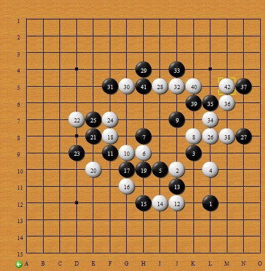

罗兰老师分析的一盘棋
#1 罗兰老师分析的一盘棋作者：蓝天蓝 发表时间：2011-7-20 8:45:10
罗兰老师分析的一盘棋
总谱

规则：一手交换
黑3攻击力不是最强，但利于全局控盘
白4被迫切断，基本属于最强防守
5到9双方都是打控制牌
但白10有所变化
11继续控制，12通三路，但目的不是直接进攻，而是抢先占据下方空间，此后可以看到下方黑棋很难有势
黑必须防守，13最强，一般当对方通三路时，纯防守的话通常选择防住中间那路，如果要想和其它己方子接应，则视情况选择防守离能接应的地方较近的那路
#2 Re:罗兰老师分析的一盘棋作者：小小亦默 发表时间：2011-7-23 20:58:57
好怪哦 版主解释下~~怪指这个棋
#3 Re:罗兰老师分析的一盘棋作者：花落无痕 发表时间：2011-7-23 21:41:03
14 这样下，会不会更好些呢
=======上图对应的爱五子棋谱代码如下，以便你拆解：========
l4j6k7l6i6h7h8k8j9g7f7j4j5g4
======================================================